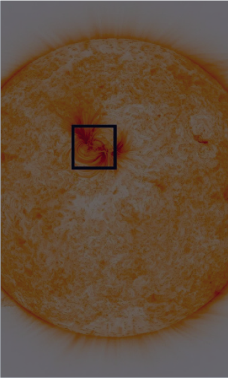
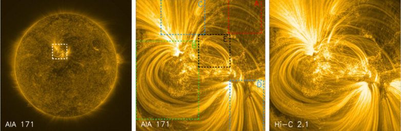
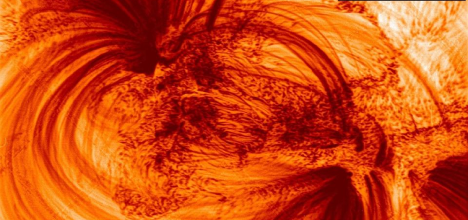

Статьи

6 минут читать
Детальный снимок Солнца
Детальные снимки Солнца показали нитевидные структуры в его намагниченной атмосфере
Космический телескоп High-Resolution Coronal Imager прислал результаты своей третьей миссии по изучению солнечной короны — детальные снимки ее магнитных петель.Ученые из Университета Центрального Ланкашира (Великобритания) опубликовали снимки Солнца, сделанные с рекордным разрешением с помощью телескопа NASA High-Resolution Coronal Imager, способного распознавать в атмосфере светила структуры размером до 70 километров, сообщает The Astrophysical Journal.
Первый запуск High-Resolution Coronal Imager (Hi-C) состоялся в июле 2012 года на канадской метеорологической ракете Black Brant. С тех пор аппарат провел еще две успешные миссии, каждая из которых принесла ценные данные о мелкомасштабных структурах солнечной короны, — и благодаря третьей, стартовавшей в конце мая 2018 года, были получены эти новые снимки.
Как отмечают ученые, ранее некоторые части солнечной атмосферы выглядели темными и пустыми, их нельзя было детально рассмотреть, однако новые изображения обнажили невероятно тонкие (для нас) магнитные петли шириной около 500 километров, заполненные чрезвычайно горячей плазмой и пронизывающие корону Солнца, температура которой достигает миллионов кельвинов.
Снимок диска Солнца, полученный с телескопа High-Resolution Coronal Imager / © UCLan
«До сих пор астрономы могли изучать ближайшую к нам звезду в стандартном разрешении, однако исключительное качество снимков, предоставленных телескопом Hi-C, позволяет нам исследовать участок Солнца в сверхвысоком разрешении. <…> Если вы смотрите футбольный матч по телевизору в стандартном разрешении, то поле выглядит зеленым и равномерным. Но посмотрите ту же игру в Ultra HD, и вы разглядите даже отдельные травинки. Это именно то, что мы получили благодаря Hi-C. Мы способны рассмотреть все области, которые составляют атмосферу звезды», — говорит профессор Роберт Уолш из Университета Центрального Ланкашира .
Корональные петли, размеры которых могут достигать нескольких тысяч километров, образуют один из основных строительных «блоков» внешних слоев атмосферы звезды и существуют как на спокойном Солнце, так и в активных его областях. Изучение структуры петель светила началось в 1940-х годах. Ученые выделяют два их типа: короткие и горячие, расположенные в активной области и обычно наблюдаемые в рентгеновских лучах, и более холодные и длинные петли, которые окружают ядро и наблюдаются в ультрафиолетовом излучении.
Слева: полное изображение диска Солнца, полученное с помощью спутника AIA 171. Пунктирные белые линии обозначают целевую активную область. Среднее фото показывает регионы, которые стали предметом исследования: корональные петли с низким уровнем выбросов (красный), пучок больших петель (зеленый), две открытые области (синий) и пучок центральных петель (черный) / © UCLan
По словам ученых, точный физический механизм, который создает эти тянущиеся горячие нити, остается неясным, поэтому дальнейшие научные исследования будут сосредоточены на том, почему они образуются и как их присутствие поможет нам изучить природу вспышек и бурь на Солнце, которые могут повлиять на жизнь на Земле.
Пучки корональных петель в сверхвысоком разрешении / © UCLan
Ранее уникальный телескоп для наблюдений за Солнцем прислал первые изображения поверхности звезды с беспрецедентным разрешением, а ученые из Национального аэрокосмического агентства США заметили странное извержение на поверхности.